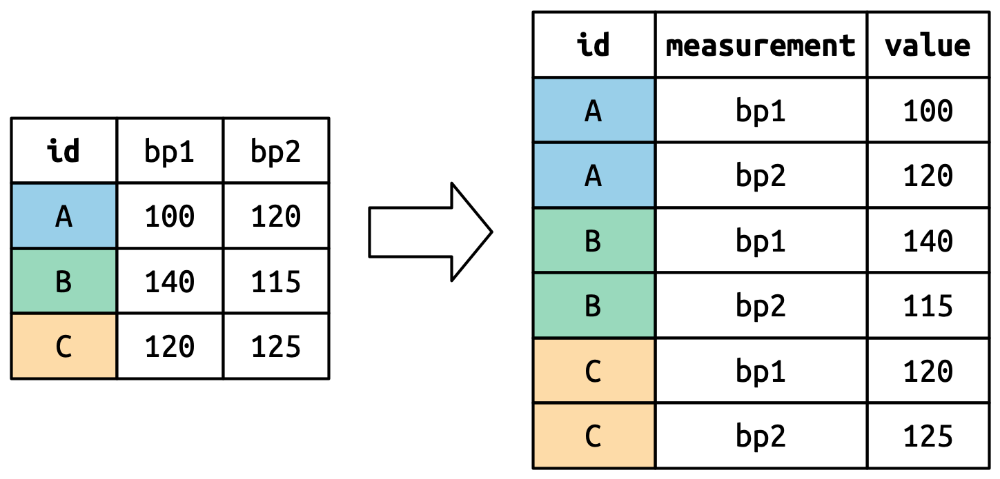
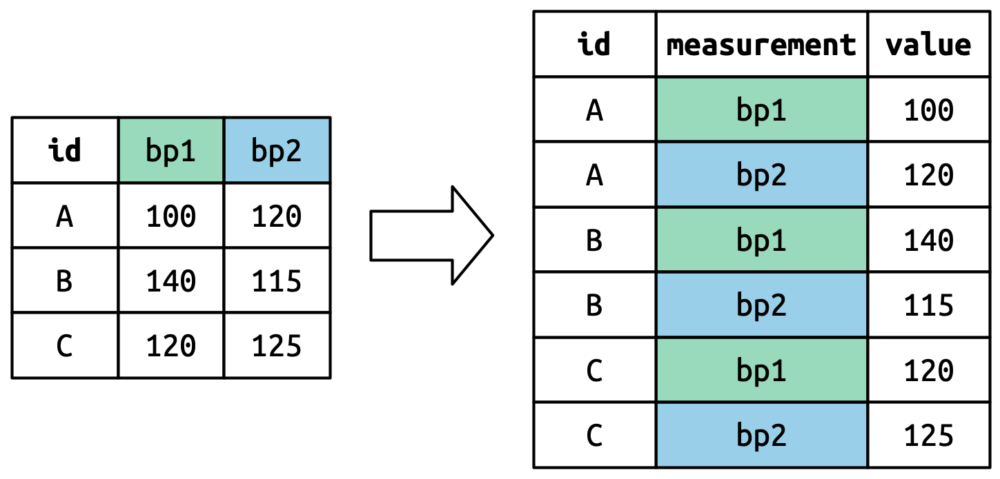
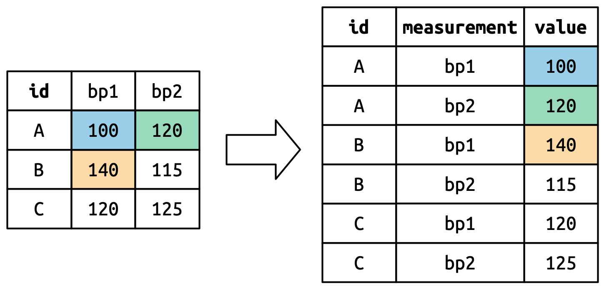
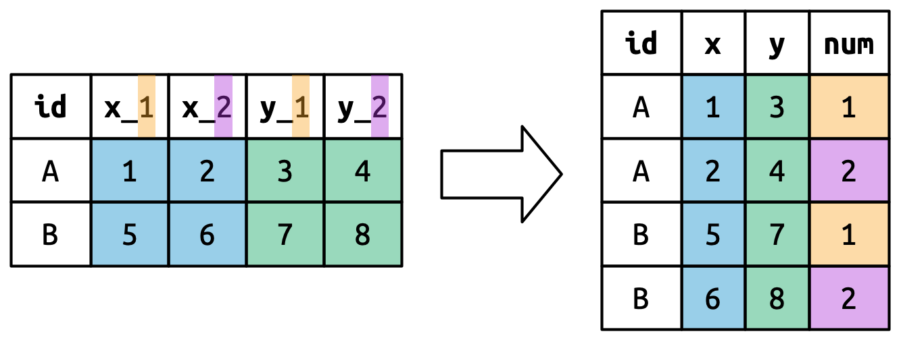

library(tidyverse)Data tidying
Introduction
“Happy families are all alike; every unhappy family is unhappy in its own way.”
— Leo Tolstoy
“Tidy datasets are all alike, but every messy dataset is messy in its own way.”
— Hadley Wickham
In this chapter, you will learn a consistent way to organize your data in R using a system called tidy data. Getting your data into this format requires some work up front, but that work pays off in the long term. Once you have tidy data and the tidy tools provided by packages in the tidyverse, you will spend much less time munging data from one representation to another, allowing you to spend more time on the data questions you care about.
In this chapter, you’ll first learn the definition of tidy data and see it applied to a simple toy dataset. Then we’ll dive into the primary tool you’ll use for tidying data: pivoting. Pivoting allows you to change the form of your data without changing any of the values.
Prerequisites
In this chapter, we’ll focus on tidyr, a package that provides a bunch of tools to help tidy up your messy datasets. tidyr is a member of the core tidyverse.
From this chapter on, we’ll suppress the loading message from library(tidyverse).
Tidy data
You can represent the same underlying data in multiple ways. The example below shows the same data organized in three different ways. Each dataset shows the same values of four variables: country, year, population, and number of documented cases of TB (tuberculosis), but each dataset organizes the values in a different way.
table1
#> # A tibble: 6 × 4
#> country year cases population
#> <chr> <dbl> <dbl> <dbl>
#> 1 Afghanistan 1999 745 19987071
#> 2 Afghanistan 2000 2666 20595360
#> 3 Brazil 1999 37737 172006362
#> 4 Brazil 2000 80488 174504898
#> 5 China 1999 212258 1272915272
#> 6 China 2000 213766 1280428583
table2
#> # A tibble: 12 × 4
#> country year type count
#> <chr> <dbl> <chr> <dbl>
#> 1 Afghanistan 1999 cases 745
#> 2 Afghanistan 1999 population 19987071
#> 3 Afghanistan 2000 cases 2666
#> 4 Afghanistan 2000 population 20595360
#> 5 Brazil 1999 cases 37737
#> 6 Brazil 1999 population 172006362
#> # ℹ 6 more rows
table3
#> # A tibble: 6 × 3
#> country year rate
#> <chr> <dbl> <chr>
#> 1 Afghanistan 1999 745/19987071
#> 2 Afghanistan 2000 2666/20595360
#> 3 Brazil 1999 37737/172006362
#> 4 Brazil 2000 80488/174504898
#> 5 China 1999 212258/1272915272
#> 6 China 2000 213766/1280428583These are all representations of the same underlying data, but they are not equally easy to use. One of them, table1, will be much easier to work with inside the tidyverse because it’s tidy.
There are three interrelated rules that make a dataset tidy:
- Each variable is a column; each column is a variable.
- Each observation is a row; each row is an observation.
- Each value is a cell; each cell is a single value.
Figure 1 shows the rules visually.

Why ensure that your data is tidy? There are two main advantages:
There’s a general advantage to picking one consistent way of storing data. If you have a consistent data structure, it’s easier to learn the tools that work with it because they have an underlying uniformity.
There’s a specific advantage to placing variables in columns because it allows R’s vectorized nature to shine. As you learned in ?@sec-mutate and ?@sec-summarize, most built-in R functions work with vectors of values. That makes transforming tidy data feel particularly natural.
dplyr, ggplot2, and all the other packages in the tidyverse are designed to work with tidy data. Here are a few small examples showing how you might work with table1.
# Compute rate per 10,000
table1 |>
mutate(rate = cases / population * 10000)
#> # A tibble: 6 × 5
#> country year cases population rate
#> <chr> <dbl> <dbl> <dbl> <dbl>
#> 1 Afghanistan 1999 745 19987071 0.373
#> 2 Afghanistan 2000 2666 20595360 1.29
#> 3 Brazil 1999 37737 172006362 2.19
#> 4 Brazil 2000 80488 174504898 4.61
#> 5 China 1999 212258 1272915272 1.67
#> 6 China 2000 213766 1280428583 1.67
# Compute total cases per year
table1 |>
group_by(year) |>
summarize(total_cases = sum(cases))
#> # A tibble: 2 × 2
#> year total_cases
#> <dbl> <dbl>
#> 1 1999 250740
#> 2 2000 296920
# Visualize changes over time
ggplot(table1, aes(x = year, y = cases)) +
geom_line(aes(group = country), color = "grey50") +
geom_point(aes(color = country, shape = country)) +
scale_x_continuous(breaks = c(1999, 2000)) # x-axis breaks at 1999 and 2000![This figure shows the number of cases in 1999 and 2000 for Afghanistan, Brazil, and China, with year on the x-axis and number of cases on the y-axis. Each point on the plot represents the number of cases in a given country in a given year. The points for each country are differentiated from others by color and shape and connected with a line, resulting in three, non-parallel, non-intersecting lines. The numbers of cases in China are highest for both 1999 and 2000, with values above 200,000 for both years. The number of cases in Brazil is approximately 40,000 in 1999 and approximately 75,000 in 2000. The numbers of cases in Afghanistan are lowest for both 1999 and 2000, with values that appear to be very close to 0 on this scale.](data-tidy_files/figure-html/unnamed-chunk-5-1.png)
Exercises
For each of the sample tables, describe what each observation and each column represents.
Sketch out the process you’d use to calculate the
ratefortable2andtable3. You will need to perform four operations:- Extract the number of TB cases per country per year.
- Extract the matching population per country per year.
- Divide cases by population, and multiply by 10000.
- Store back in the appropriate place.
You haven’t yet learned all the functions you’d need to actually perform these operations, but you should still be able to think through the transformations you’d need.
Lengthening data
The principles of tidy data might seem so obvious that you wonder if you’ll ever encounter a dataset that isn’t tidy. Unfortunately, however, most real data is untidy. There are two main reasons:
Data is often organized to facilitate some goal other than analysis. For example, it’s common for data to be structured to make data entry, not analysis, easy.
Most people aren’t familiar with the principles of tidy data, and it’s hard to derive them yourself unless you spend a lot of time working with data.
This means that most real analyses will require at least a little tidying. You’ll begin by figuring out what the underlying variables and observations are. Sometimes this is easy; other times you’ll need to consult with the people who originally generated the data. Next, you’ll pivot your data into a tidy form, with variables in the columns and observations in the rows.
tidyr provides two functions for pivoting data: pivot_longer() and pivot_wider(). We’ll first start with pivot_longer() because it’s the most common case. Let’s dive into some examples.
Data in column names
The billboard dataset records the billboard rank of songs in the year 2000:
billboard
#> # A tibble: 317 × 79
#> artist track date.entered wk1 wk2 wk3 wk4 wk5
#> <chr> <chr> <date> <dbl> <dbl> <dbl> <dbl> <dbl>
#> 1 2 Pac Baby Don't Cry (Ke… 2000-02-26 87 82 72 77 87
#> 2 2Ge+her The Hardest Part O… 2000-09-02 91 87 92 NA NA
#> 3 3 Doors Down Kryptonite 2000-04-08 81 70 68 67 66
#> 4 3 Doors Down Loser 2000-10-21 76 76 72 69 67
#> 5 504 Boyz Wobble Wobble 2000-04-15 57 34 25 17 17
#> 6 98^0 Give Me Just One N… 2000-08-19 51 39 34 26 26
#> # ℹ 311 more rows
#> # ℹ 71 more variables: wk6 <dbl>, wk7 <dbl>, wk8 <dbl>, wk9 <dbl>, …In this dataset, each observation is a song. The first three columns (artist, track and date.entered) are variables that describe the song. Then we have 76 columns (wk1-wk76) that describe the rank of the song in each week1. Here, the column names are one variable (the week) and the cell values are another (the rank).
To tidy this data, we’ll use pivot_longer():
billboard |>
pivot_longer(
cols = starts_with("wk"),
names_to = "week",
values_to = "rank"
)
#> # A tibble: 24,092 × 5
#> artist track date.entered week rank
#> <chr> <chr> <date> <chr> <dbl>
#> 1 2 Pac Baby Don't Cry (Keep... 2000-02-26 wk1 87
#> 2 2 Pac Baby Don't Cry (Keep... 2000-02-26 wk2 82
#> 3 2 Pac Baby Don't Cry (Keep... 2000-02-26 wk3 72
#> 4 2 Pac Baby Don't Cry (Keep... 2000-02-26 wk4 77
#> 5 2 Pac Baby Don't Cry (Keep... 2000-02-26 wk5 87
#> 6 2 Pac Baby Don't Cry (Keep... 2000-02-26 wk6 94
#> 7 2 Pac Baby Don't Cry (Keep... 2000-02-26 wk7 99
#> 8 2 Pac Baby Don't Cry (Keep... 2000-02-26 wk8 NA
#> 9 2 Pac Baby Don't Cry (Keep... 2000-02-26 wk9 NA
#> 10 2 Pac Baby Don't Cry (Keep... 2000-02-26 wk10 NA
#> # ℹ 24,082 more rowsAfter the data, there are three key arguments:
colsspecifies which columns need to be pivoted, i.e. which columns aren’t variables. This argument uses the same syntax asselect()so here we could use!c(artist, track, date.entered)orstarts_with("wk").names_tonames the variable stored in the column names, we named that variableweek.values_tonames the variable stored in the cell values, we named that variablerank.
Note that in the code "week" and "rank" are quoted because those are new variables we’re creating, they don’t yet exist in the data when we run the pivot_longer() call.
Now let’s turn our attention to the resulting, longer data frame. What happens if a song is in the top 100 for less than 76 weeks? Take 2 Pac’s “Baby Don’t Cry”, for example. The above output suggests that it was only in the top 100 for 7 weeks, and all the remaining weeks are filled in with missing values. These NAs don’t really represent unknown observations; they were forced to exist by the structure of the dataset2, so we can ask pivot_longer() to get rid of them by setting values_drop_na = TRUE:
billboard |>
pivot_longer(
cols = starts_with("wk"),
names_to = "week",
values_to = "rank",
values_drop_na = TRUE
)
#> # A tibble: 5,307 × 5
#> artist track date.entered week rank
#> <chr> <chr> <date> <chr> <dbl>
#> 1 2 Pac Baby Don't Cry (Keep... 2000-02-26 wk1 87
#> 2 2 Pac Baby Don't Cry (Keep... 2000-02-26 wk2 82
#> 3 2 Pac Baby Don't Cry (Keep... 2000-02-26 wk3 72
#> 4 2 Pac Baby Don't Cry (Keep... 2000-02-26 wk4 77
#> 5 2 Pac Baby Don't Cry (Keep... 2000-02-26 wk5 87
#> 6 2 Pac Baby Don't Cry (Keep... 2000-02-26 wk6 94
#> # ℹ 5,301 more rowsThe number of rows is now much lower, indicating that many rows with NAs were dropped.
You might also wonder what happens if a song is in the top 100 for more than 76 weeks? We can’t tell from this data, but you might guess that additional columns wk77, wk78, … would be added to the dataset.
This data is now tidy, but we could make future computation a bit easier by converting values of week from character strings to numbers using mutate() and readr::parse_number(). parse_number() is a handy function that will extract the first number from a string, ignoring all other text.
billboard_longer <- billboard |>
pivot_longer(
cols = starts_with("wk"),
names_to = "week",
values_to = "rank",
values_drop_na = TRUE
) |>
mutate(
week = parse_number(week)
)
billboard_longer
#> # A tibble: 5,307 × 5
#> artist track date.entered week rank
#> <chr> <chr> <date> <dbl> <dbl>
#> 1 2 Pac Baby Don't Cry (Keep... 2000-02-26 1 87
#> 2 2 Pac Baby Don't Cry (Keep... 2000-02-26 2 82
#> 3 2 Pac Baby Don't Cry (Keep... 2000-02-26 3 72
#> 4 2 Pac Baby Don't Cry (Keep... 2000-02-26 4 77
#> 5 2 Pac Baby Don't Cry (Keep... 2000-02-26 5 87
#> 6 2 Pac Baby Don't Cry (Keep... 2000-02-26 6 94
#> # ℹ 5,301 more rowsNow that we have all the week numbers in one variable and all the rank values in another, we’re in a good position to visualize how song ranks vary over time. The code is shown below and the result is in Figure 2. We can see that very few songs stay in the top 100 for more than 20 weeks.
billboard_longer |>
ggplot(aes(x = week, y = rank, group = track)) +
geom_line(alpha = 0.25) +
scale_y_reverse()
How does pivoting work?
Now that you’ve seen how we can use pivoting to reshape our data, let’s take a little time to gain some intuition about what pivoting does to the data. Let’s start with a very simple dataset to make it easier to see what’s happening. Suppose we have three patients with ids A, B, and C, and we take two blood pressure measurements on each patient. We’ll create the data with tribble(), a handy function for constructing small tibbles by hand:
df <- tribble(
~id, ~bp1, ~bp2,
"A", 100, 120,
"B", 140, 115,
"C", 120, 125
)We want our new dataset to have three variables: id (already exists), measurement (the column names), and value (the cell values). To achieve this, we need to pivot df longer:
df |>
pivot_longer(
cols = bp1:bp2,
names_to = "measurement",
values_to = "value"
)
#> # A tibble: 6 × 3
#> id measurement value
#> <chr> <chr> <dbl>
#> 1 A bp1 100
#> 2 A bp2 120
#> 3 B bp1 140
#> 4 B bp2 115
#> 5 C bp1 120
#> 6 C bp2 125How does the reshaping work? It’s easier to see if we think about it column by column. As shown in Figure 3, the values in a column that was already a variable in the original dataset (id) need to be repeated, once for each column that is pivoted.

The column names become values in a new variable, whose name is defined by names_to, as shown in Figure 4. They need to be repeated once for each row in the original dataset.

The cell values also become values in a new variable, with a name defined by values_to. They are unwound row by row. Figure 5 illustrates the process.

Many variables in column names
A more challenging situation occurs when you have multiple pieces of information crammed into the column names, and you would like to store these in separate new variables. For example, take the who2 dataset, the source of table1 and friends that you saw above:
who2
#> # A tibble: 7,240 × 58
#> country year sp_m_014 sp_m_1524 sp_m_2534 sp_m_3544 sp_m_4554
#> <chr> <dbl> <dbl> <dbl> <dbl> <dbl> <dbl>
#> 1 Afghanistan 1980 NA NA NA NA NA
#> 2 Afghanistan 1981 NA NA NA NA NA
#> 3 Afghanistan 1982 NA NA NA NA NA
#> 4 Afghanistan 1983 NA NA NA NA NA
#> 5 Afghanistan 1984 NA NA NA NA NA
#> 6 Afghanistan 1985 NA NA NA NA NA
#> # ℹ 7,234 more rows
#> # ℹ 51 more variables: sp_m_5564 <dbl>, sp_m_65 <dbl>, sp_f_014 <dbl>, …This dataset, collected by the World Health Organisation, records information about tuberculosis diagnoses. There are two columns that are already variables and are easy to interpret: country and year. They are followed by 56 columns like sp_m_014, ep_m_4554, and rel_m_3544. If you stare at these columns for long enough, you’ll notice there’s a pattern. Each column name is made up of three pieces separated by _. The first piece, sp/rel/ep, describes the method used for the diagnosis, the second piece, m/f is the gender (coded as a binary variable in this dataset), and the third piece, 014/1524/2534/3544/4554/5564/65 is the age range (014 represents 0-14, for example).
So in this case we have six pieces of information recorded in who2: the country and the year (already columns); the method of diagnosis, the gender category, and the age range category (contained in the other column names); and the count of patients in that category (cell values). To organize these six pieces of information in six separate columns, we use pivot_longer() with a vector of column names for names_to and instructors for splitting the original variable names into pieces for names_sep as well as a column name for values_to:
who2 |>
pivot_longer(
cols = !(country:year),
names_to = c("diagnosis", "gender", "age"),
names_sep = "_",
values_to = "count"
)
#> # A tibble: 405,440 × 6
#> country year diagnosis gender age count
#> <chr> <dbl> <chr> <chr> <chr> <dbl>
#> 1 Afghanistan 1980 sp m 014 NA
#> 2 Afghanistan 1980 sp m 1524 NA
#> 3 Afghanistan 1980 sp m 2534 NA
#> 4 Afghanistan 1980 sp m 3544 NA
#> 5 Afghanistan 1980 sp m 4554 NA
#> 6 Afghanistan 1980 sp m 5564 NA
#> # ℹ 405,434 more rowsAn alternative to names_sep is names_pattern, which you can use to extract variables from more complicated naming scenarios, once you’ve learned about regular expressions in ?@sec-regular-expressions.
Conceptually, this is only a minor variation on the simpler case you’ve already seen. Figure 6 shows the basic idea: now, instead of the column names pivoting into a single column, they pivot into multiple columns. You can imagine this happening in two steps (first pivoting and then separating) but under the hood it happens in a single step because that’s faster.

Data and variable names in the column headers
The next step up in complexity is when the column names include a mix of variable values and variable names. For example, take the household dataset:
household
#> # A tibble: 5 × 5
#> family dob_child1 dob_child2 name_child1 name_child2
#> <int> <date> <date> <chr> <chr>
#> 1 1 1998-11-26 2000-01-29 Susan Jose
#> 2 2 1996-06-22 NA Mark <NA>
#> 3 3 2002-07-11 2004-04-05 Sam Seth
#> 4 4 2004-10-10 2009-08-27 Craig Khai
#> 5 5 2000-12-05 2005-02-28 Parker GracieThis dataset contains data about five families, with the names and dates of birth of up to two children. The new challenge in this dataset is that the column names contain the names of two variables (dob, name) and the values of another (child, with values 1 or 2). To solve this problem we again need to supply a vector to names_to but this time we use the special ".value" sentinel; this isn’t the name of a variable but a unique value that tells pivot_longer() to do something different. This overrides the usual values_to argument to use the first component of the pivoted column name as a variable name in the output.
household |>
pivot_longer(
cols = !family,
names_to = c(".value", "child"),
names_sep = "_",
values_drop_na = TRUE
)
#> # A tibble: 9 × 4
#> family child dob name
#> <int> <chr> <date> <chr>
#> 1 1 child1 1998-11-26 Susan
#> 2 1 child2 2000-01-29 Jose
#> 3 2 child1 1996-06-22 Mark
#> 4 3 child1 2002-07-11 Sam
#> 5 3 child2 2004-04-05 Seth
#> 6 4 child1 2004-10-10 Craig
#> # ℹ 3 more rowsWe again use values_drop_na = TRUE, since the shape of the input forces the creation of explicit missing variables (e.g., for families with only one child).
Figure 7 illustrates the basic idea with a simpler example. When you use ".value" in names_to, the column names in the input contribute to both values and variable names in the output.

names_to = c(".value", "num") splits the column names into two components: the first part determines the output column name (x or y), and the second part determines the value of the num column.
Widening data
So far we’ve used pivot_longer() to solve the common class of problems where values have ended up in column names. Next we’ll pivot (HA HA) to pivot_wider(), which makes datasets wider by increasing columns and reducing rows and helps when one observation is spread across multiple rows. This seems to arise less commonly in the wild, but it does seem to crop up a lot when dealing with governmental data.
We’ll start by looking at cms_patient_experience, a dataset from the Centers of Medicare and Medicaid services that collects data about patient experiences:
cms_patient_experience
#> # A tibble: 500 × 5
#> org_pac_id org_nm measure_cd measure_title prf_rate
#> <chr> <chr> <chr> <chr> <dbl>
#> 1 0446157747 USC CARE MEDICAL GROUP INC CAHPS_GRP_1 CAHPS for MIPS… 63
#> 2 0446157747 USC CARE MEDICAL GROUP INC CAHPS_GRP_2 CAHPS for MIPS… 87
#> 3 0446157747 USC CARE MEDICAL GROUP INC CAHPS_GRP_3 CAHPS for MIPS… 86
#> 4 0446157747 USC CARE MEDICAL GROUP INC CAHPS_GRP_5 CAHPS for MIPS… 57
#> 5 0446157747 USC CARE MEDICAL GROUP INC CAHPS_GRP_8 CAHPS for MIPS… 85
#> 6 0446157747 USC CARE MEDICAL GROUP INC CAHPS_GRP_12 CAHPS for MIPS… 24
#> # ℹ 494 more rowsThe core unit being studied is an organization, but each organization is spread across six rows, with one row for each measurement taken in the survey organization. We can see the complete set of values for measure_cd and measure_title by using distinct():
cms_patient_experience |>
distinct(measure_cd, measure_title)
#> # A tibble: 6 × 2
#> measure_cd measure_title
#> <chr> <chr>
#> 1 CAHPS_GRP_1 CAHPS for MIPS SSM: Getting Timely Care, Appointments, and In…
#> 2 CAHPS_GRP_2 CAHPS for MIPS SSM: How Well Providers Communicate
#> 3 CAHPS_GRP_3 CAHPS for MIPS SSM: Patient's Rating of Provider
#> 4 CAHPS_GRP_5 CAHPS for MIPS SSM: Health Promotion and Education
#> 5 CAHPS_GRP_8 CAHPS for MIPS SSM: Courteous and Helpful Office Staff
#> 6 CAHPS_GRP_12 CAHPS for MIPS SSM: Stewardship of Patient ResourcesNeither of these columns will make particularly great variable names: measure_cd doesn’t hint at the meaning of the variable and measure_title is a long sentence containing spaces. We’ll use measure_cd as the source for our new column names for now, but in a real analysis you might want to create your own variable names that are both short and meaningful.
pivot_wider() has the opposite interface to pivot_longer(): instead of choosing new column names, we need to provide the existing columns that define the values (values_from) and the column name (names_from):
cms_patient_experience |>
pivot_wider(
names_from = measure_cd,
values_from = prf_rate
)
#> # A tibble: 500 × 9
#> org_pac_id org_nm measure_title CAHPS_GRP_1 CAHPS_GRP_2
#> <chr> <chr> <chr> <dbl> <dbl>
#> 1 0446157747 USC CARE MEDICAL GROUP … CAHPS for MIPS… 63 NA
#> 2 0446157747 USC CARE MEDICAL GROUP … CAHPS for MIPS… NA 87
#> 3 0446157747 USC CARE MEDICAL GROUP … CAHPS for MIPS… NA NA
#> 4 0446157747 USC CARE MEDICAL GROUP … CAHPS for MIPS… NA NA
#> 5 0446157747 USC CARE MEDICAL GROUP … CAHPS for MIPS… NA NA
#> 6 0446157747 USC CARE MEDICAL GROUP … CAHPS for MIPS… NA NA
#> # ℹ 494 more rows
#> # ℹ 4 more variables: CAHPS_GRP_3 <dbl>, CAHPS_GRP_5 <dbl>, …The output doesn’t look quite right; we still seem to have multiple rows for each organization. That’s because, we also need to tell pivot_wider() which column or columns have values that uniquely identify each row; in this case those are the variables starting with "org":
cms_patient_experience |>
pivot_wider(
id_cols = starts_with("org"),
names_from = measure_cd,
values_from = prf_rate
)
#> # A tibble: 95 × 8
#> org_pac_id org_nm CAHPS_GRP_1 CAHPS_GRP_2 CAHPS_GRP_3 CAHPS_GRP_5
#> <chr> <chr> <dbl> <dbl> <dbl> <dbl>
#> 1 0446157747 USC CARE MEDICA… 63 87 86 57
#> 2 0446162697 ASSOCIATION OF … 59 85 83 63
#> 3 0547164295 BEAVER MEDICAL … 49 NA 75 44
#> 4 0749333730 CAPE PHYSICIANS… 67 84 85 65
#> 5 0840104360 ALLIANCE PHYSIC… 66 87 87 64
#> 6 0840109864 REX HOSPITAL INC 73 87 84 67
#> # ℹ 89 more rows
#> # ℹ 2 more variables: CAHPS_GRP_8 <dbl>, CAHPS_GRP_12 <dbl>This gives us the output that we’re looking for.
How does pivot_wider() work?
To understand how pivot_wider() works, let’s again start with a very simple dataset. This time we have two patients with ids A and B, we have three blood pressure measurements on patient A and two on patient B:
df <- tribble(
~id, ~measurement, ~value,
"A", "bp1", 100,
"B", "bp1", 140,
"B", "bp2", 115,
"A", "bp2", 120,
"A", "bp3", 105
)We’ll take the values from the value column and the names from the measurement column:
df |>
pivot_wider(
names_from = measurement,
values_from = value
)
#> # A tibble: 2 × 4
#> id bp1 bp2 bp3
#> <chr> <dbl> <dbl> <dbl>
#> 1 A 100 120 105
#> 2 B 140 115 NATo begin the process pivot_wider() needs to first figure out what will go in the rows and columns. The new column names will be the unique values of measurement.
df |>
distinct(measurement) |>
pull()
#> [1] "bp1" "bp2" "bp3"By default, the rows in the output are determined by all the variables that aren’t going into the new names or values. These are called the id_cols. Here there is only one column, but in general there can be any number.
df |>
select(-measurement, -value) |>
distinct()
#> # A tibble: 2 × 1
#> id
#> <chr>
#> 1 A
#> 2 Bpivot_wider() then combines these results to generate an empty data frame:
df |>
select(-measurement, -value) |>
distinct() |>
mutate(x = NA, y = NA, z = NA)
#> # A tibble: 2 × 4
#> id x y z
#> <chr> <lgl> <lgl> <lgl>
#> 1 A NA NA NA
#> 2 B NA NA NAIt then fills in all the missing values using the data in the input. In this case, not every cell in the output has a corresponding value in the input as there’s no third blood pressure measurement for patient B, so that cell remains missing. We’ll come back to this idea that pivot_wider() can “make” missing values in ?@sec-missing-values.
You might also wonder what happens if there are multiple rows in the input that correspond to one cell in the output. The example below has two rows that correspond to id “A” and measurement “bp1”:
df <- tribble(
~id, ~measurement, ~value,
"A", "bp1", 100,
"A", "bp1", 102,
"A", "bp2", 120,
"B", "bp1", 140,
"B", "bp2", 115
)If we attempt to pivot this we get an output that contains list-columns, which you’ll learn more about in ?@sec-rectangling:
df |>
pivot_wider(
names_from = measurement,
values_from = value
)
#> Warning: Values from `value` are not uniquely identified; output will contain
#> list-cols.
#> • Use `values_fn = list` to suppress this warning.
#> • Use `values_fn = {summary_fun}` to summarise duplicates.
#> • Use the following dplyr code to identify duplicates.
#> {data} |>
#> dplyr::summarise(n = dplyr::n(), .by = c(id, measurement)) |>
#> dplyr::filter(n > 1L)
#> # A tibble: 2 × 3
#> id bp1 bp2
#> <chr> <list> <list>
#> 1 A <dbl [2]> <dbl [1]>
#> 2 B <dbl [1]> <dbl [1]>Since you don’t know how to work with this sort of data yet, you’ll want to follow the hint in the warning to figure out where the problem is:
df |>
group_by(id, measurement) |>
summarize(n = n(), .groups = "drop") |>
filter(n > 1)
#> # A tibble: 1 × 3
#> id measurement n
#> <chr> <chr> <int>
#> 1 A bp1 2It’s then up to you to figure out what’s gone wrong with your data and either repair the underlying damage or use your grouping and summarizing skills to ensure that each combination of row and column values only has a single row.
Summary
In this chapter you learned about tidy data: data that has variables in columns and observations in rows. Tidy data makes working in the tidyverse easier, because it’s a consistent structure understood by most functions, the main challenge is transforming the data from whatever structure you receive it in to a tidy format. To that end, you learned about pivot_longer() and pivot_wider() which allow you to tidy up many untidy datasets. The examples we presented here are a selection of those from vignette("pivot", package = "tidyr"), so if you encounter a problem that this chapter doesn’t help you with, that vignette is a good place to try next.
Another challenge is that, for a given dataset, it can be impossible to label the longer or the wider version as the “tidy” one. This is partly a reflection of our definition of tidy data, where we said tidy data has one variable in each column, but we didn’t actually define what a variable is (and it’s surprisingly hard to do so). It’s totally fine to be pragmatic and to say a variable is whatever makes your analysis easiest. So if you’re stuck figuring out how to do some computation, consider switching up the organisation of your data; don’t be afraid to untidy, transform, and re-tidy as needed!
If you enjoyed this chapter and want to learn more about the underlying theory, you can learn more about the history and theoretical underpinnings in the Tidy Data paper published in the Journal of Statistical Software.
Now that you’re writing a substantial amount of R code, it’s time to learn more about organizing your code into files and directories. In the next chapter, you’ll learn all about the advantages of scripts and projects, and some of the many tools that they provide to make your life easier.